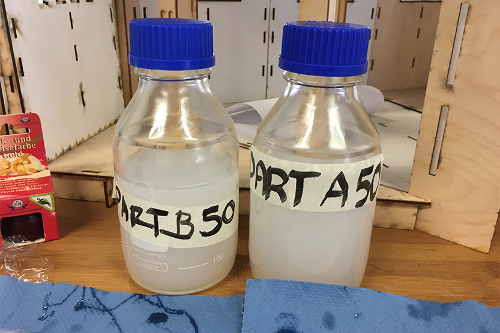
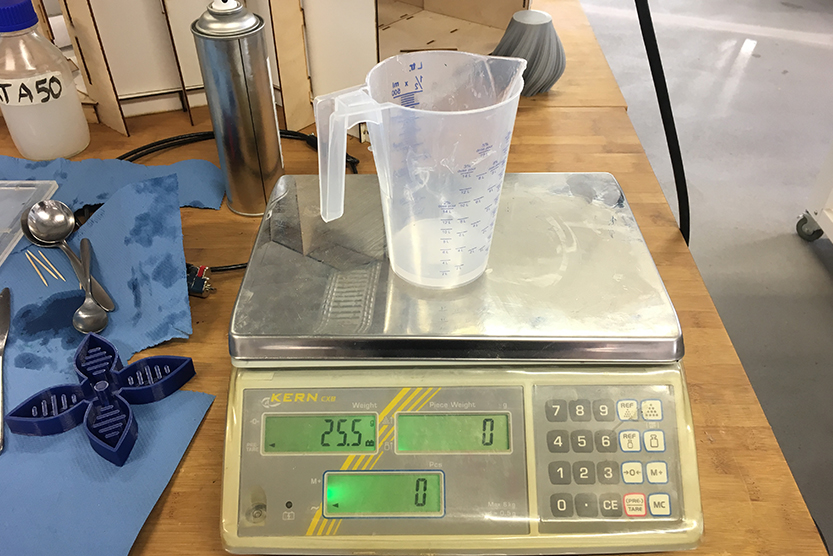
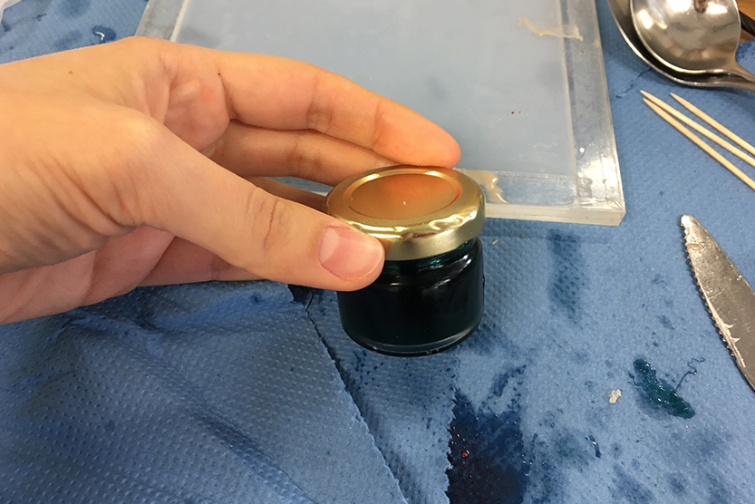
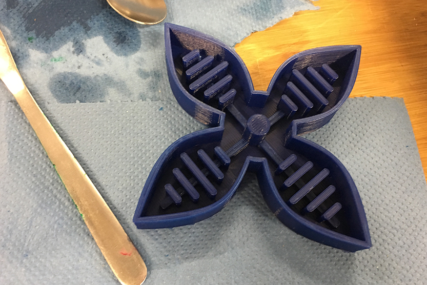
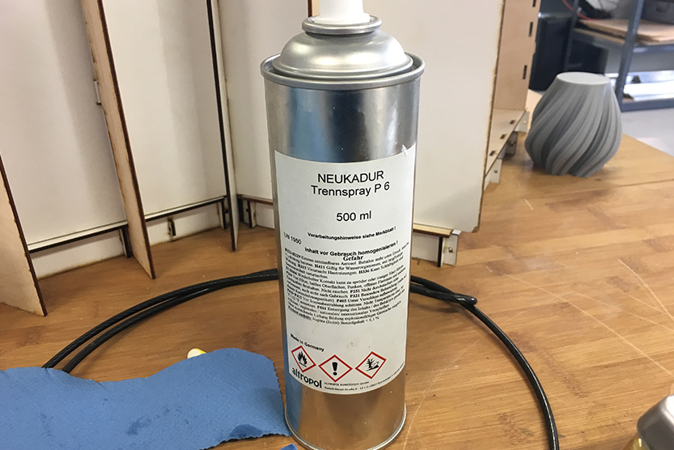
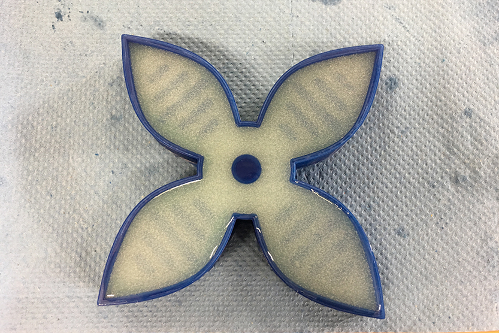
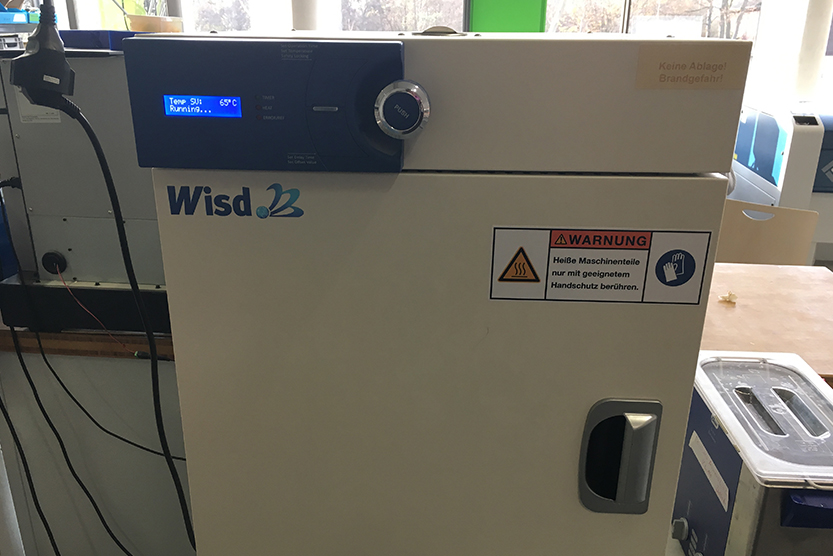
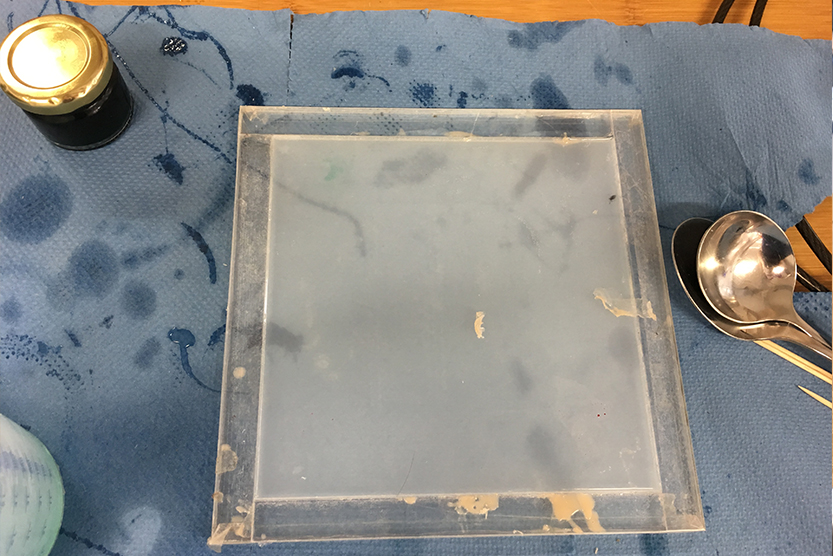
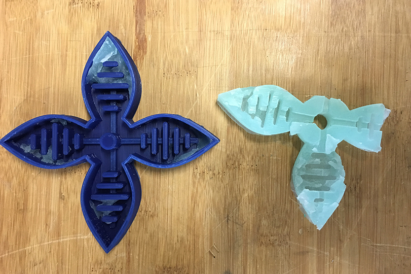

Soft Robotics. Part 1. Inflatables.
1
First step is preparing a shape in the Fusion and printing a mold in the Ultimaker. When your mold is ready you have to take components A and B and mix it in the same proportion (50/50).

To be more precise is better to use scale.

If you want you can add some color. I decided to male it green, so I add a bit of color to material A, then mixed it and after that added material B.

2
When your material is ready you have to spray your mold. This step is very important, if you do not do it material will stick to your mold and it will be destroyed. I forgot about spray and that is why my first try failed.


3
After spray pour your material to the mold. And wait until the air will go up from the material. You can use toothpick to break air bubles.

4
Put your mold in the oven for 15 minutes.

5
Do the same steps with the second / top part which you are going to connect with the main shape. You can print in 3D printer another mold for it or you can you a plate as on the photo.

6
On this photo you can see my first result, it did not work out because I forgot to use spray.
